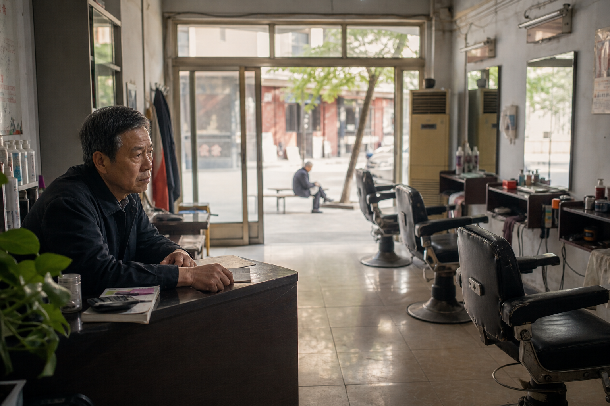

流量焦虑
获客成本逐年攀升，平台流量难以沉淀为可持续经营资产。
Digital Intelligence Ecosystem
WIGSWAN 通过智能化增长系统，为传统美业门店导入高价值项目与数字化运营能力。我们不是单纯销售产品，而是帮助门店升级经营结构。
为什么 90% 的门店守着优质流量，却陷入低客单、低复购的增长泥潭？
获客成本逐年攀升，平台流量难以沉淀为可持续经营资产。
业务结构高度重合，陷入同质化价格战，缺乏高毛利、强粘性的第二增长曲线。
高度依赖发型师个人能力，服务标准难以复制，规模化扩张即面临品质坍塌。
WIGSWAN 2.0 系统通过技术手段，实现供需两端的最优资源动态分配。
基于标准化经营数据，协助门店完成客户、服务与支持资源的高效协同，提升响应质量与成交效率。
将门店真实服务能力转化为更适合线上传播的品牌内容，持续建立信任与咨询入口。
通过会员分层与持续服务机制，帮助门店从单次成交转向长期关系经营。
为什么 WIGSWAN 2.0 系统是美业增长的唯一确定性路径？
Industry Research
提炼 WIGSWAN 对中国美业、假发消费与门店数字化经营的最新观察，帮助门店更早判断下一轮增长机会。

平台流量、同质化竞争与消费决策线上化正在重塑门店经营逻辑。未来更有竞争力的门店，会把剪发、护理、假发与形象管理整合为可持续运营的客户资产。
阅读全文US Market Research
Localized analysis for independent studios, booth-rental salons, privacy-led consultations, and high-ticket hair replacement services in the United States.
In the US market, trust, privacy, financing expectations, and before-and-after proof shape purchase decisions before a client ever sits in the chair.
Read reportJapan Market Research
高齢化、個室相談、自然な装着感、アフターケアを軸に、日本の美容室が高信頼サービスを導入するための市場分析をまとめています。
Korea Market Research
K-뷰티 소비자 경험, 이미지 관리, 콘텐츠 상담 전환, 사후 케어를 중심으로 한국 미용실의 고신뢰 서비스 기회를 분석합니다.

输入您的门店基础数据，系统将基于多维经营评估，为您判断项目导入后的增长潜力。
预估月度营收增长潜力
生成评估...